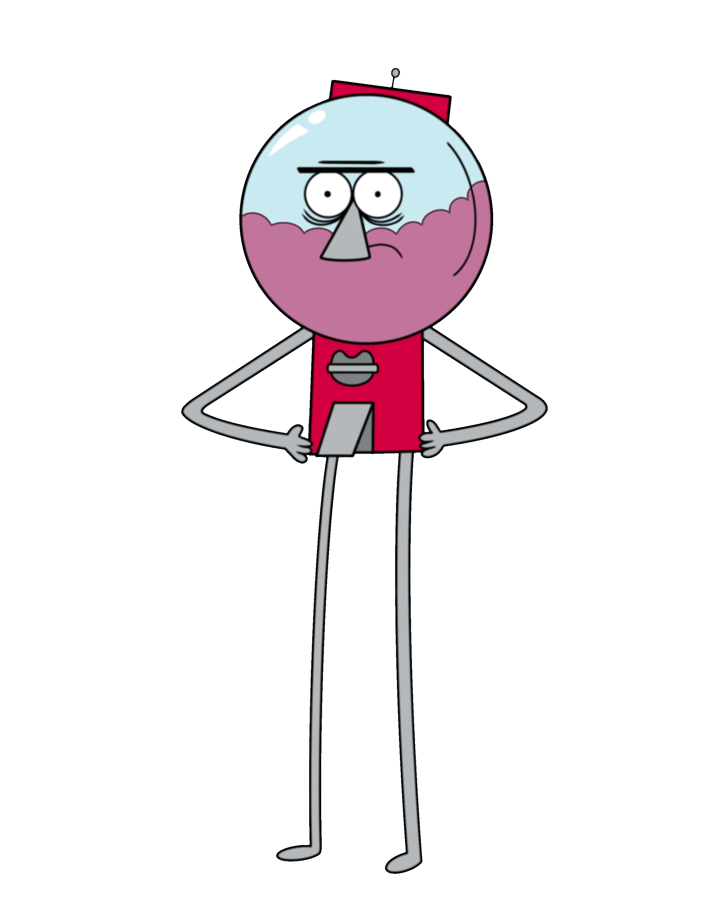

Personaggi Principali
Benson
Benson è il capo severo di Mordecai e Rigby al parco. Spesso irritato dalla loro pigrizia, ha anche un lato più morbido, soprattutto verso Pops. Alla fine della serie, dimostra un forte legame d'amicizia con quest'ultimo.